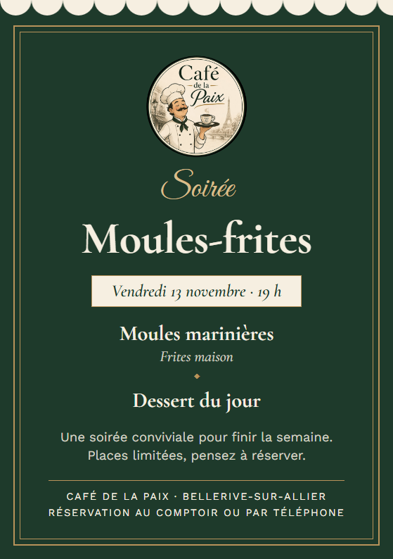
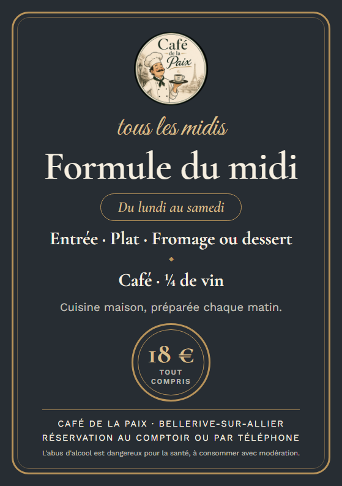
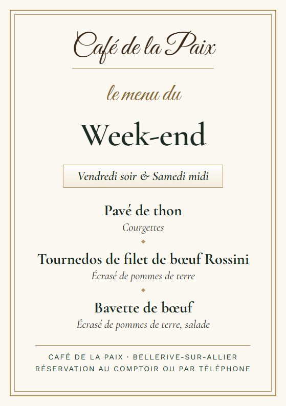

charte graphique
Café de la Paix
Café · Restaurant · Bar — Bellerive-sur-Allier
charte graphique
Café · Restaurant · Bar — Bellerive-sur-Allier
un
Le Café de la Paix, c'est le bistrot de quartier à la française : on y mange bien, sans chichis, à prix honnête. Tout ce qui sort du café, du flyer à la publication Facebook, doit donner cette même impression : chaleureux, soigné, mais jamais prétentieux.
« Vendredi soir, on remet le couvert. »
« Ici, on mange bien et on ne traîne pas. »
« Les places partent vite : pensez à réserver. »
À éviter : « Expérience culinaire d'exception », abus de points d'exclamation, majuscules partout.
deux
Le chef moustachu qui sert un café. C'est la signature du café : il apparaît sur tous les supports (flyers, affiches, site, réseaux sociaux, enseigne).
Plus sobre, sans personnage. Pour les petits espaces et les usages élégants : pied de page, tampon, cartes de fidélité, étiquettes, menu de fête.
Idéal · vert bouteille
Idéal · ardoise
Possible · crème
Éviter · photo chargée
Laisser autour du logo une marge vide au moins égale à ¼ de son diamètre. Pas de texte, de bord de page ou d'image dans cette zone.
Taille minimale : 2,5 cm de diamètre à l'impression, 80 pixels à l'écran. En dessous, utiliser le logo terrasse ou simplement le nom écrit.
trois
Quatre couleurs, tirées du logo et de la salle. Le vert et la crème font l'essentiel ; le doré est un fil, jamais un fond.
#1E3A2B · RVB 30 58 43#F6EFE1 · RVB 246 239 225#B8935A · RVB 184 147 90#272D33 · RVB 39 45 51#8A6A33 · RVB 138 106 51#1B2A22 · RVB 27 42 34Les valeurs CMJN sont indicatives : pour une impression soignée, demander une épreuve à l'imprimeur. Pour un doré plus riche, un Pantone 7562 C est proche du ton « Or ».
quatre
Trois polices, gratuites, à télécharger sur fonts.google.com. Elles s'utilisent aussi dans Canva, Word ou sur le site.
l'accroche
Le titre
La date et l'heure
Le contenu
le détail en italique
Les infos pratiques en petites capitales
cinq
Ce sont eux qui rendent un support reconnaissable au premier coup d'œil, même sans logo. Chaque support en utilise au moins deux.
six
Pour rester reconnaissable, chaque communication part de l'un de ces trois modèles. On change les textes, jamais la structure.

VertSoirées, événements, animations du vendredi.

ArdoiseMenus, formule, plats du jour, produits de saison.

CrèmeMenus de fête, menu du week-end, informations, fermetures.
Ces modèles se remplissent dans l'Atelier flyers (fichier flyers.html), qui produit le PDF à imprimer ou l'image pour Facebook et Instagram.
sept
| Support | Taille | Usage |
|---|---|---|
| Flyer | A5 · 14,8 × 21 cm | Comptoir, tables, boîtes aux lettres |
| Affiche | A4 · 21 × 29,7 cm | Vitrine, porte, commerces voisins |
| Post | 1080 × 1080 px | Facebook, Instagram |
| Story | 1080 × 1920 px | Stories Facebook et Instagram |
Impression conseillée : papier mat 250 g pour les flyers, 170 g pour les affiches. Chez un imprimeur, demander 3 mm de fond perdu.